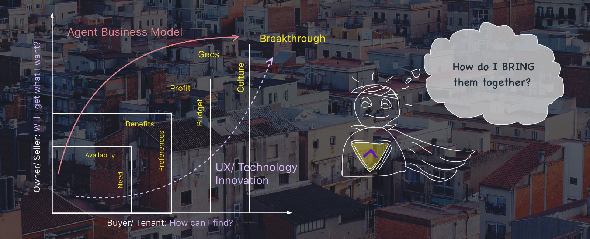
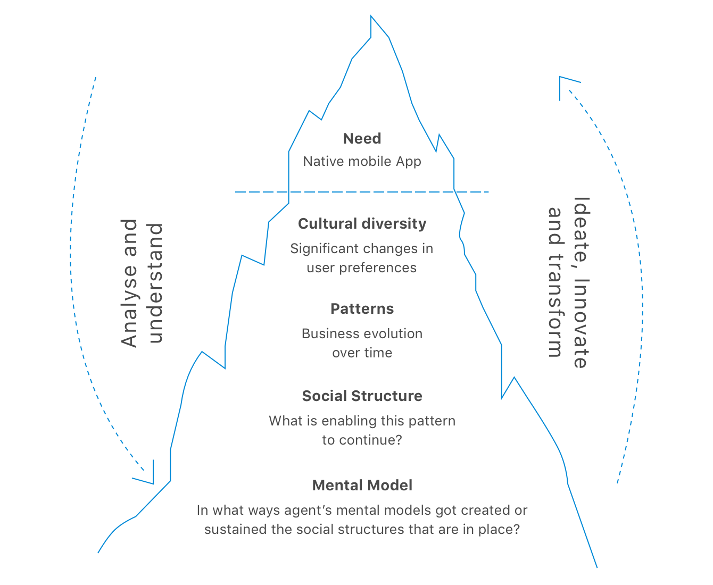
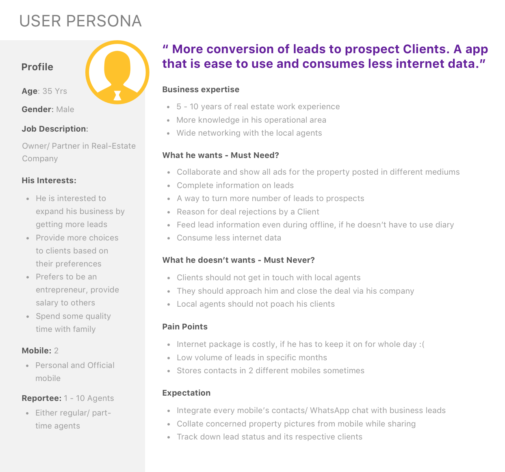

Housing.com- one of India’s top startups approached me to conduct a user research, gather deep-dive understanding of its target audience, test the utility of their idea for their attempt to introduce their first mobile app for housing agents.
Local agents are the one to have deep knowledge and insights in real estate, rental or PG accommodations. Everything done manually and verbally through large agents network spreaded across in their operational area. More than enough to close leads relevant to a person's necessity and budget.
These agents already have their own localized pattern of approach and mental model to run their business. The way to induce the need of housing app at the same time provide exceptional macro and micro management business model for housing agents had to be unleashed during the research.

Fun part is, in this project I had to do what i always get excited about —user research. UX Design team required a researcher who can interact well in regional language (Tamil) and transcript the critical research findings in English. Metropolitan cities like Delhi, Mumbai & Kolkata already been covered, except Chennai. An exquisite chance that i couldn't let slip it away right out of my hands. I did some same interviews well in advance to understand the agent’s business model.
“I recorded the interviews, posed the interview questions to agents, probed for more details, took written notes and images on my phone.”
UX Design team being my indirect stakeholders, i carried out the research with 6 identified users in selective locality (local agents). My role did have a diverse experience of striking a balance between what housing.com wants to know and what users really want that works, bringing out their usual work pattern. Thus, framed few key terminology to conduct the UX Research.
We agreed upon not to reveal the users, that it is being conducted for Housing.com to avoid biased datas.
Tip of Iceberg - Housing identified it to be a challenging business opportunity. A step towards their next leap to collide so far manually handled agents data and slowly move them to a database management that will be fast, cost efficient and reliable. Provide the local agents a platform as well as a tool to scale and open up them to a wide range of customers.

Research Challenge, In depth - India being a culturally diversified country there were significant differences, specially when it is north and southern part of India. There was a thin line of conflict, on the other side of the line What works well might not best fit as per the cultural nuances of south India. My user research had to be a valuable proposition to lay the solid foundation revealing the gaps.
To become aware of what’s going on in their world was priority. It is not only about local agents nature of work but being critical about them. Like in business, they are sensitive to every change in the market and they need to adapt to current industry trends and needs.
My focus was to empathize agents pain points and business model by being physically present in their environment, capture work pattern and culture. Almost all the interviews were planned in agent's office premises and one happened to be at the agent's client place fortunately.

I had to carve out a well polished persona out of those 6 user profiles, that the team will be primarily designing for. So it can cater to millions of users.
Taking critical research findings to the next level, we decided to strip it down to it’s essential centric approach. Tried to orient the mental and operating model of the agents and revise the questions as the interview went on.
In the upcoming interviews, informations were gathered more regarding their modes of networking, business trend, problems faced, customer interactions, devices used.
With the internal excitement around the project, the scope kept increasing and we found ourselves in long unwinding debates unlocking the socio-culture difference between North and South India. I raised a need to effectively pivot some of the questions based on regional customs followed by people in South other than North —like astrology, numerology, vasthu, Tamil month specifications majority of it can influence a agent's business in real estate comparatively.
Housing For Agents - Mobile App had its successful launch by 2015. The result was a mobile experience that is fast, uses less data, and re-engages users in multiple ways.
“Installation rates rised 38% gradually every quarter, bounce rate fall by over 40% and visitors time 10% longer per session with frequent returns”
I realized that making housing for agents, a mobile app accessible for an increasingly larger audience is entirely dependent on team's -focused roots for problem solving. Received credits for envisioning the importance of a cohesive approach, humanizing the research by bringing out cultural diversity.